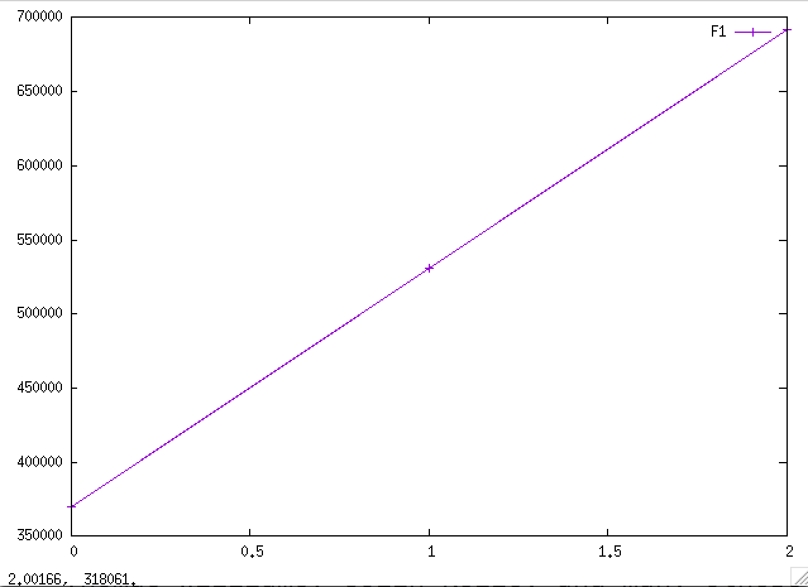
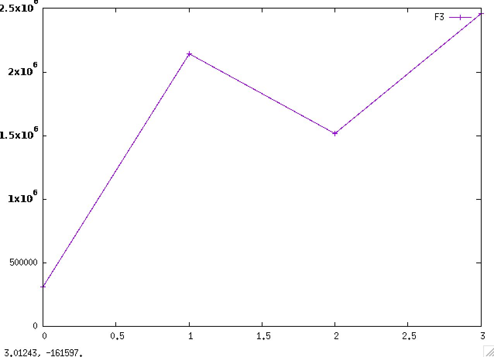
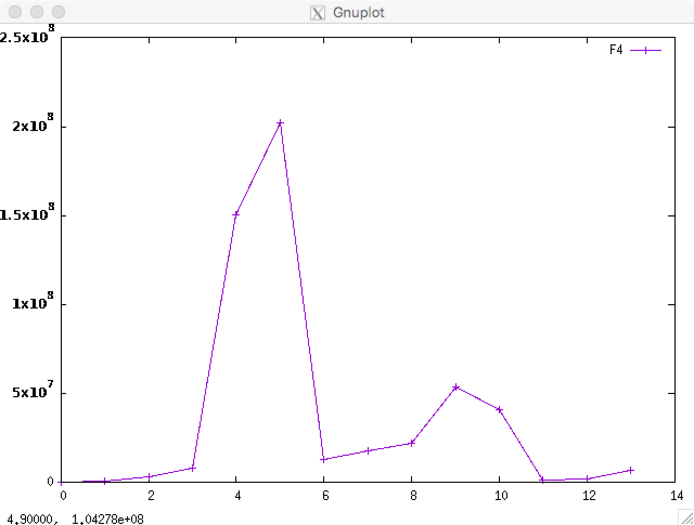
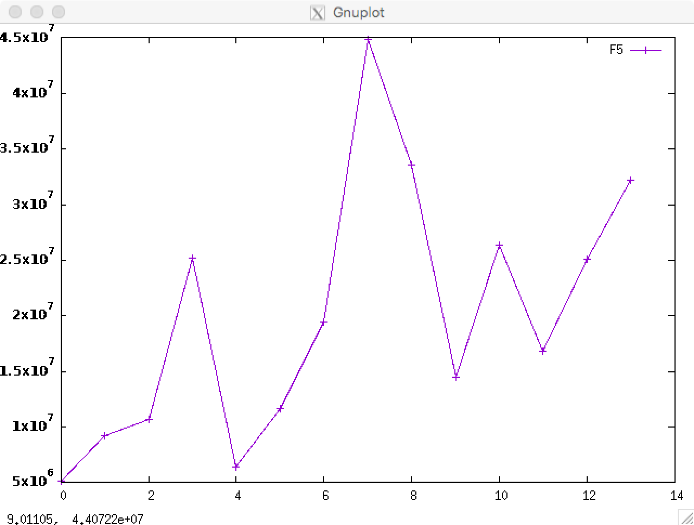

id=#index 1
# X Y

20210826 370000.00 #../data/NC/9002020022100763-20210826-00003.csv 37000.00 F1 10ml 10
26.8.2021
I arrived at Nofima at around 9:00 and took pictures of the cells. Sissel decided we should split the cells today, and helped me with it after the meeting. Nina was in the lab and commented on how the cells I had sowed were miniscule in number. Sissel agreed, and said we would probably need to redo the experiment on Monday.
I completed splitting of the cells and put them into a bigger flask, a T75 flask. They might start growing faster over the weekend, but I need a large number of them, millions, for the spinner flask experiment.
I had lunch, it was fish. I liked it. I went for a walk and bought an icecream. I also did some machine learning lessons as part of a free google kaggle machine learning course, they are having a 30 days of machine learning this month and I don't want to miss out on it. One week remains.
I stayed quite late. My head felt heavy. Luckily it felt better with some fresh air.
20210831 531000.00 #../data/NC/9002020022100763-20210831-00003.csv 53100.00 f1 bov 10ml 10
31.8.2021
This is the last day of August. Today I arrived at exactly 8:59 and started the day by having a coffee. Then I took pictures of the cells. After sending them to Sissel, she said they looked too confluent in some areas and suggested resowing them into the flask. I did this myself after lunch.
It was a lot of fun doing an experiment alone in the lab. Nina, the lab leader, was there also, doing her own experiments. She suggested to count the cells again, and there are now 500 000 cells in the solution in total, a great increase from what we had on day 3. The cells have started to grow after some hesitation in the beginning. There will be enough cells to do the next experiment without collecting new cells.
So today was a lot of fun. Sissel was also pleasantly surprised. It seemed like she thought I was a little cursed and cold, always getting damp and blue results. She was really happy and said we were getting there like a team. Spirits seem to lift a lot.
Nina commented on a huge lump of cells in the sample we measured. She suggested having the cells in trypsin for 15 minutes instead of 5. Sissel said it had happened due to poor homogenisation, which means my pipetting technique should be more thorough.
After the experiment I did some more on a machine learning course, 30 days of machine learning from google on kaggle. I submitted new predictions for the course, and have made it to the top 73 %, place 5316 of 7342. It isn't great, but better than the inital standard attempt everyone does automatically for the course. I also made it to the top 87 % of tabular august competition. A little worse than the other, but still not the worst. I still have a few hours remaining, but I am happy with my ranking and what I have learnt. I will get a new challenge next month which I can take part in. Eventually, maybe I'll take part in competing for monetary prizes.
Today was a good day. I have felt well, although my face might have become a little sunburnt by my nose.
20210902 691500.00 #../data/NC/9002020022100763-20210902-00003.csv 46100.00 f1 dag 10 15ml 15
2.9.2021
Today I spent some time learning how to do F2, the next experiment, and prepared to redo F1. Sadly, the cells hardly proliferated in our first attempt.
I had lunch and went to the lab with Sissel and prepared the beginning of F2. I will be taking pictures the cells as they proliferate this weekend, so sadly I will not be able to visit mom&dad before Saturday.
I went for a quick walk home and back before lunch and before we started on the lab work. It seemed walking like this made it a lot easier to be social, I think it helped getting blood to my head.
Sissel joked that the cells we used in the first attempt of the first experiment were B-cells as they hardly grew at all. I said they are my cells, thus probably C-cells as that is my average grade so far.
Sissel got a new eppendorf tube with cells out of the freezer. I did the experiment all by myself this time, we will se if it is succesfull soon enough. The pellet seemd larger, and I managed to count the cells. I counted the cells with 15 ml growth media. Nina suggested adding another 10 ml to the flask to make sure they would grow nicely. The flask now has 25 ml media. It is a large T175 flask, instead of a T25 this time. I believe the new flask has 357 000 cells (2,38*10^4 * 15), which is already about as many cells as in my old T25 flask after 10 days.
I did some more machine learning for fun. It seems things are going well, health wise also. My doctor wanted me to contact the gifttelefon, and they said I shouldn't worry as a lot of time has passed and the drugs we took are not very toxic as far as they know.
id=#index 3
# X Y

20210902 315000.00 #../data/NC/9002020022100763-20210902-00004.csv 21000.00 f3 dag 0 15
2.9.2021
Today I spent some time learning how to do F2, the next experiment, and prepared to redo F1. Sadly, the cells hardly proliferated in our first attempt.
I had lunch and went to the lab with Sissel and prepared the beginning of F2. I will be taking pictures the cells as they proliferate this weekend, so sadly I will not be able to visit mom&dad before Saturday.
I went for a quick walk home and back before lunch and before we started on the lab work. It seemed walking like this made it a lot easier to be social, I think it helped getting blood to my head.
Sissel joked that the cells we used in the first attempt of the first experiment were B-cells as they hardly grew at all. I said they are my cells, thus probably C-cells as that is my average grade so far.
Sissel got a new eppendorf tube with cells out of the freezer. I did the experiment all by myself this time, we will se if it is succesfull soon enough. The pellet seemd larger, and I managed to count the cells. I counted the cells with 15 ml growth media. Nina suggested adding another 10 ml to the flask to make sure they would grow nicely. The flask now has 25 ml media. It is a large T175 flask, instead of a T25 this time. I believe the new flask has 357 000 cells (2,38*10^4 * 15), which is already about as many cells as in my old T25 flask after 10 days.
I did some more machine learning for fun. It seems things are going well, health wise also. My doctor wanted me to contact the gifttelefon, and they said I shouldn't worry as a lot of time has passed and the drugs we took are not very toxic as far as they know.
20210906 2145000.00 #../data/NC/9002020022100763-20210906-00005.csv 143000.00 f3 15
6.9.2021
This Monday was laberious. I took pictures of the cells. It seems the splitting went well. I made diff medium for the 6bb well experiment, F2 and F3, and sowed cells for F3. We decided to do the 6bb experiment over again too, we're calling it F3. We threw out the cells for the 6bb F2 experiment since they performed so poorly.
I am going to coat flasks tomorrow for the F3 esperiment, we are going to add diff medium to the cells on Thursday. I counted the cells as I sowed them into wells, we have 2 175 000 cells, so over 2 million cells. They are performing well.
I will probably have to split them again soon. I had a seminar at 16:15. Ingrid is kind enough to let me attend by Zoom. My group is really skilled, and answered some of the questions. They are going to meet up every Monday to discuss the problems, and I am invited. I'll by joining digitally.
I was really tired after today and had tea, biscuits and an ice cream before brushing my teeth and sleeping. My eyes are still a bit of a mess, especially the right one.
20210908 1515000.00 #../data/NC/9002020022100763-20210908-00001.csv 101000.00 f3 day 6 (8.9.2021) 15
8.9.2021
Today I didn't really do that much. I splitted the F3 flasks again so now there are 4 t175 flasks. I coated to t175 flasks to do this. Sissel was gone today. I talked to Nina in the lab and she gave me a t175 flask full of bovine cells in case I need it. Amazingly, it seemed to have as many cells as my flasks after only two days. It is a bit strange.
I had lunch before splitting the cells, waiting for the proliferation media and the trypsin to heat up. We get served at the cantine by bringing a tray, and they will put food on your tray for you. I think they do it this way to prevent COVID19 infections. The person serving me lost is ladle on the floor. Seemed like a bad day for him. I hope I'm not confusing them.
I counted the cells, and for some strange reason there seems to be fewer cells than on Monday. However, the flasks looked dense, or confluent. I hope there will be enough cells for the next experiments.
20210910 2460000.00 #../data/NC/9002020022100763-20210910-00001.csv 164000.00 f3 sowing into 6bb boards 15
10.9.2021
This Friday I got my last moderne injection. I took pictures of the cells and heated up trypsin and proliferation media for a parallel of f3.
After taking the vaccine I took 3,7 ml, about 600 000 cells, and filled 2 6bb boards with 2ml cells and growth media per well. I should have used 4ml.
I used 10ml for the flasks. I had used two flasks and joined them to get 600 000 cells. I think I have about 7 million cells in total in the lab.
Sissel said I had completed a lab week with success. She shared some papers with me. I have also am completed reading Bokhandleren i Kabul.
id=#index 4
# X Y

20210917 157500.00 #../data/NC/9002020022100763-20210917-00001.csv 10500.00 f4 sowing 15
17.9.2021
I no longer had any cells in the incubation cupboard but I was tasked to take out and sow new cells. Nina gave me a tube of cells. I heated it in a water bath this time. I prepared the t175 flask by putting it in the LAF-bench so it would heat to room temperature. The cells were transferred to a 10ml falcon tube as normal and spun down. I measured the amonut of cells in 10ml and transferred them to the t175 flask. They are growing in about 25ml media.
The media is really old and has gone purple. I am told this happens when it becomes basic, which is the opposite but sort of the same as going acidic.
After lunch, where I spoke a little to Katinka who told me to name one of my cells after her, I rinsed the remaining cells I have in the freezer for the F3 experiment. I did it myself. During the experiment I helped someone for an hour with a relatively simple Python+pandas problem, but did not solve it. I took the cells to Mona who helped me measure them on a spectrophotometer. Amazingly, the results where excellent. We were very pleased.
20210920 786000.00 #../data/NC/9002020022100763-20210920-00002.csv 52400.00 f4 15
20.9.2021
I split the cells today. They had become very confluent. I had just recently cut my hair, they said it looked good. Before I split the cells Mona showed me how to do analysis with qPCR. I spent a lot of time pipetting my samples into little wells. We ended the day very late, since the experiment takes a lot of time to conduct, which meant I split the cells at around three in the afternoon. I have around 500 000 cells.
20210922 3255000.00 #../data/NC/9002020022100763-20210922-00001.csv 217000.00 f4 15
22.9.2021
I went to Nofima to take pictures of my cells, and to look a bit at the excel document I am supposed to make, but could feel a cold was coming on. I took pictures of the cells, had lunch, and spent a lot of the day reading. I also purchased a new book, Environmental Microbiology. It was recommended by one of my friends at NTNU, Einar.
I didn't complete the excel document. I don't really understand how to do it. Sissel told me I could use the DNA to make another measurement to complete the experiment.
I said hi to Dimitrios on Teams and agreed to meet on Thursday in the lab. He will be helping me with the bioreactor experiment.
20210927 2190000.00 #../data/NC/9002020022100763-20210927-00006.csv 146000.00 f4 27 15
27.9.2021
Today was first day back from being sick. I was away on Thursday and Friday, and didn't take any pictures of the cells during the weekend. Sissel split my cells for me on Friday.
I came in at 9:33, a little late for the meeting with Dimitrios. I was dressed in my new jacket, wollen jumper and hat which my parents gave me this weekend. The first thing I heared was "oh no, you have cut your hair! You had such great wavy hair."
I met Dimitrios who was struggling with a computer. I helped a little to get it working. He explained the experiment to me and we started preparing the microcarriers. They are a lot smaller than I imagined, they look like dust.
I may have sucked some of the microcarriers sticking a sucking device a bit too far down into the bottle with microcarriers and PBS wash. Dimitrios said we are filling the reactor with more carriers anyway during the experiment, so it doesn't matter too much.
Sissel and Mona helped me make the excel spreadsheet I started on last week. I find excel hard to understand and use, I am very happy they helped. I had lunch. It was maccaroni soup today.
After lunch I and Dimitrios autoclaved the microcarriers. He is from Greece, and spent the summer there. I split the cells at the end of the day. We have many times more cells than we need. We will be throwing away half of them, sadly. Next time, we only need 2 or 3 tubes from the freezer.
What Am I Grateful for?
What Would Make Today Great?
What Am I Worried About?
Things have been going well so far. This is something I am really grateful for.
Today has been very good.
I am worried about two things. I didn't really split the cells that well today. I am worried there will be too many cells in the flasks, or that they will become contaminated. I should also take out to biotrash, I threw some cells in there and they probably go bad quickly.
I am also worried about molecular cell biology. The people on my group aren't including me on zoom anymore. I will probably have to contact the people running the course and explain my situation again, I wonder how to do the course from Ås. I have done half the obligatory sign-ins though.
https://briansunter.com/blog/five-minute-journal/?utm_source=hackernewsletter&utm_medium=email&utm_term=fav
I am feeling tired and a little worried. I have just been sick and coming back is a little strange, also we are starting a new more serious phase of the studies. I am meeting new people. I have now been at Nofima for a little over a month.
It was good to eat lunch, talk to Dimitrios and to get help from Nina and Sissel with my excel sheet. They said they were happy that I can do the experiments after demonstrating them once.
We have started the bioreactor experiment, and I am back at work again.
I think it was very good to finish the excel spreadsheet.
Next time I will do washing of the microcarriers better, and also ask how to split the cells when there are an excess of cells to better clearify what to do. I think they said suck of half the trypsin, I didn't really do that but threw out some of the flasks and didn't use two of the flask contents when splitting, meaning I disposed of 25 % of the total cells.

20210930 2820000.00 #../data/NC/9002020022100763-20210930-00001.csv 188000.00 f4 day0 15
30.9.2021
Cells were added to bioreactor. 800 ml of media and 9 million cells.
20210930 3795000.00 #../data/NC/9002020022100763-20210930-00002.csv 253000.00 f4 day0-2 15
30.9.2021
Cells were added to bioreactor. 800 ml of media and 9 million cells.
20210930 243000.00 #../data/NC/9002020022100763-20210930-00003.csv 16200.00 f4 day0-mc 15
30.9.2021
Cells were added to bioreactor. 800 ml of media and 9 million cells.
20211001 339000.00 #../data/NC/9002020022100763-20211001-00001.csv 22600.00 F4_Day1 15
1.10.2021
Dimitrios helped me take day 1 sample.
20211003 420000.00 #../data/NC/9002020022100763-20211003-00001.csv 28000.00 F4_Day3 15
3.10.2021
This Sunday I took a sample from the bioreactor on my own.
20211005 1008000.00 #../data/NC/9002020022100763-20211005-00001.csv 67200.00 f4-day5 15
5.10.2021
Today I took another sample from the bioreactor. I agreed with Dimitrios to meet at the lab at 9:30. He was very talkative today, he had just had a scare with a water leakage in the lab. Turns out it was not because of us, but rather a filter which had been installed incorrectly.
Dimitrios will play football at 15:15. On Thursday, day 7, we will add more microcarriers. We will also check if the lactose and glucose levels are depleting, and add more media if that is the case.
I am happy to get along so well with Dimitrios. He reminds me a lot of Jordi. Things have been going really well lately, my cells have duplicated twice, we now have more than 50 million cells in the reactor. We started with 9.
Today will be great if we successfully autoclave the microcarriers, which I am pretty sure will go fine, and if I manage to do a lot more studying for the molecular cell biology course.
I am a bit worried about studying. Half the semester has now passed, and I have been really lazy. I need to step up my game, and start drinking more coffee and study like mad onwards.
I have been thinking a little about my studies lately. I hope to get more done.
20211007 769500.00 #../data/NC/9002020022100763-20211007-00001.csv 51300.00 f4-day7 15
7.10.2021
I agreed with Dimitros to meet after lunch, 12:40, to measure glucose and lactose levels. I need to learn more about this, but the measurements will indicate how happy the cells are.
The experiment is happily going as expected still, as far as I know.
I hope today will go smooth with the glucose and lactose measurements. We will also add new microcarriers and new media if the glucose levels are low.
I am still worried about my studies. Yesterday I slept a lot, I think this helped with my anxieties and mood.
I am thinking about how to do better with my studies, and how to feel better in general. I am grateful I am healthy, and I would like master my studies, which is my main worry right now. I have not studied enough this semester, I need to find techniques to do better.
There are still 50 mill cells in the reactor, it has not changed since Tuessday. I think the reactor is saturated, and the number should increase when we add more microcarriers (MCs).
I connected the computer to a USB hub today, the screen in the lab had an inbuilt hub. This will make it possible to only have one mouse, keyboard and screen by the two computers in the lab, they just need to swap a cable back and forth. I am considering to inform the lab group.
I will feel great at the end of the day if we have added MCs to the bioreactor, added media if needed, and done some studying.
20211009 32550.00 #../data/NC/9002020022100763-20211009-00001.csv 2170.00 f4-day9 15
9.10.2021
This Saturday I went to the lab to take samples of the cells. The bioreactor had turned all purple. I read the pH value, purple means high pH, and it had reached over 9. It should be 7.3.
I contacted Dimitrios and it turns out we forgot to turn on CO2 on Thursday when we added microcarriers. When Dimitrios went to the lab to turn on agitation, I was copying over files for him for a presentation on Monday. I suppose he didn't get the best overview of the bioreactor since the interface on the bioreactor itself is hard to read. I should have let him use the computer.
Viability readings say only 33 % of the cells are alive. We seem to have fewer cells now than when we started. Some 40 million cells have died, if the readings are correct.
We might have to redo the experiment. Dimitrios said he would go to the lab to have a look.
20211011 38850.00 #../data/NC/9002020022100763-20211011-00001.csv 2590.00 f4-day11 15
11.10.2021
The bioreactor experiment F4 is now officially declared over and new cells will be collected to get going again.
It was a simple mistake which took down the experiment. I am considering to write a program which will monitor the bioreactor output and send an SMS if the values are incorrect. But all we really need to do is to keep an extra keen eye on the parameters. This mistake will not happen again, it will be something else if it goes wrong again.
I looked into programming the bioreactor. There is a visual programming language which can set off an alarm when parameters are wrong. You need to actually hear it though. I might setup some alarms just in case.
Hopefully it will go well next time.
20211015 135900.00 #../data/NC/9002020022100763-20211015-00001.csv 9060.00 f4-day15 15
15.10.2021
I split my cells. 20ml falcon tube, there are over 5 million cells.
I cleaned the water bath and the LAF-bench.
id=#index 5
# X Y

20211015 3825000.00 #../data/NC/9002020022100763-20211015-00002.csv 255000.00 f5-day3 15
15.10.2021
I split my cells. 20ml falcon tube, there are over 5 million cells.
I cleaned the water bath and the LAF-bench.
20211019 172500.00 #../data/NC/9002020022100763-20211019-00003.csv 11500.00 day0-f5 15
19.10.2021
I got up early and looked at the cells. They are very confluent. I asked Sissel if she had time to look at them at 9:00. She said they had differentiated, the experiment will likely fail.
I went ahead with the experiment anyway. Hopefully it will work out. I setup alarms so that I recieve emails if the parameters are wrong, or start to go wrong.
After Hoechst staining, we noticed the cells had attached poorly to the carriers. We gave the cells more time to attach by turning off reactor agitation for an extra hour.
20211020 199500.00 #../data/NC/9002020022100763-20211020-00001.csv 13300.00 day1-f5 15
20.10.2021
The cells have attached well to the microcarriers. However, only 1 mill cells have grown since last reading. I now have 10 mill cells in reactor. Last time they went up to 18 mill, almost doubling.
20211022 472500.00 #../data/NC/9002020022100763-20211022-00001.csv 31500.00 f5-day3 15
22.10.2021
25 million cells!
F5 is doing better than F4 did on day 3!
20211024 120150.00 #../data/NC/9002020022100763-20211024-00001.csv 8010.00 f5 15
24.10.2021
I went to the lab after having visited my parents.
I took out a sample and measured it. There were almost no cells. So I took out another sample and found completely different results. In the first sample I didn't find any microcarriers when I looked at the Hoechst staining with the expensive Zeiss microscope. Something went wrong today, I'll try to figure out what tomorrow.

Either I have lots of cells, and things are fine, or the experiment is a disaster, which would be because I let the cells differentiate.
F4 is the first experiment, which failed when we forgot to turn on CO2. F5 is the new experiment, which has gone on for 5 days now.
You can see the results from the second sample in dark circular green.
20211024 219000.00 #../data/NC/9002020022100763-20211024-00002.csv 14600.00 f5-day5 15
24.10.2021
I went to the lab after having visited my parents.
I took out a sample and measured it. There were almost no cells. So I took out another sample and found completely different results. In the first sample I didn't find any microcarriers when I looked at the Hoechst staining with the expensive Zeiss microscope. Something went wrong today, I'll try to figure out what tomorrow.

Either I have lots of cells, and things are fine, or the experiment is a disaster, which would be because I let the cells differentiate.
F4 is the first experiment, which failed when we forgot to turn on CO2. F5 is the new experiment, which has gone on for 5 days now.
You can see the results from the second sample in dark circular green.
20211024 364500.00 #../data/NC/9002020022100763-20211024-00003.csv 24300.00 f5-day5-2 15
24.10.2021
I went to the lab after having visited my parents.
I took out a sample and measured it. There were almost no cells. So I took out another sample and found completely different results. In the first sample I didn't find any microcarriers when I looked at the Hoechst staining with the expensive Zeiss microscope. Something went wrong today, I'll try to figure out what tomorrow.

Either I have lots of cells, and things are fine, or the experiment is a disaster, which would be because I let the cells differentiate.
F4 is the first experiment, which failed when we forgot to turn on CO2. F5 is the new experiment, which has gone on for 5 days now.
You can see the results from the second sample in dark circular green.
20211024 841500.00 #../data/NC/9002020022100763-20211024-00004.csv 56100.00 f5-day5-3 15
24.10.2021
I went to the lab after having visited my parents.
I took out a sample and measured it. There were almost no cells. So I took out another sample and found completely different results. In the first sample I didn't find any microcarriers when I looked at the Hoechst staining with the expensive Zeiss microscope. Something went wrong today, I'll try to figure out what tomorrow.

Either I have lots of cells, and things are fine, or the experiment is a disaster, which would be because I let the cells differentiate.
F4 is the first experiment, which failed when we forgot to turn on CO2. F5 is the new experiment, which has gone on for 5 days now.
You can see the results from the second sample in dark circular green.
20211024 628500.00 #../data/NC/9002020022100763-20211024-00005.csv 41900.00 f5-day5-4 15
24.10.2021
I went to the lab after having visited my parents.
I took out a sample and measured it. There were almost no cells. So I took out another sample and found completely different results. In the first sample I didn't find any microcarriers when I looked at the Hoechst staining with the expensive Zeiss microscope. Something went wrong today, I'll try to figure out what tomorrow.

Either I have lots of cells, and things are fine, or the experiment is a disaster, which would be because I let the cells differentiate.
F4 is the first experiment, which failed when we forgot to turn on CO2. F5 is the new experiment, which has gone on for 5 days now.
You can see the results from the second sample in dark circular green.
20211024 271500.00 #../data/NC/9002020022100763-20211024-00006.csv 18100.00 f5-day5-5 15
24.10.2021
I went to the lab after having visited my parents.
I took out a sample and measured it. There were almost no cells. So I took out another sample and found completely different results. In the first sample I didn't find any microcarriers when I looked at the Hoechst staining with the expensive Zeiss microscope. Something went wrong today, I'll try to figure out what tomorrow.

Either I have lots of cells, and things are fine, or the experiment is a disaster, which would be because I let the cells differentiate.
F4 is the first experiment, which failed when we forgot to turn on CO2. F5 is the new experiment, which has gone on for 5 days now.
You can see the results from the second sample in dark circular green.
20211026 493500.00 #../data/NC/9002020022100763-20211026-00001.csv 32900.00 day7-f5 15
26.10.2021
I managed to do the sample today. I have the same amount of cells as on Friday. It isn’t ideal.
I will have to prepare a presentation for tomorrow. I should work out the results from the PCR machine. Also, Nina is going to show me Western blot.
I forgot to put on tape on the microcarriers when we autoclaved it yesterday. I’ll as it to my howto.
20211026 315000.00 #../data/NC/9002020022100763-20211026-00002.csv 21000.00 day7-f5-2 15
26.10.2021
I managed to do the sample today. I have the same amount of cells as on Friday. It isn’t ideal.
I will have to prepare a presentation for tomorrow. I should work out the results from the PCR machine. Also, Nina is going to show me Western blot.
I forgot to put on tape on the microcarriers when we autoclaved it yesterday. I’ll as it to my howto.
20211028 469500.00 #../data/NC/9002020022100763-20211028-00001.csv 31300.00 f5-day+ 15
28.10.2021
I did more of the protein experiment. It is vital I write down how I do it as soon as possible.
20211102 604500.00 #../data/NC/9002020022100763-20211102-00001.csv 40300.00 f5-day15 15
2.11.2021
Looked at the tubulin band on B, looks great.
I have now started a new cell experiment, two tubes are in two T175 flasks. I also washed my bench and the water bath. Hoping for some karma and good will in the lab.
id=#index 6
# X Y

20211104 567000.00 #../data/NC/9002020022100763-20211104-00007.csv 37800.00 f6-day2 15
20211104 459000.00 #../data/NC/9002020022100763-20211104-00008.csv 30600.00 f6-day16 15
20211106 898500.00 #../data/NC/9002020022100763-20211106-00001.csv 59900.00 f6-day4 15
20211109 4292000.00 #../data/NC/9002020022100763-20211109-00002.csv 116000.00 f6-37ml-inoculation-tube 37
9.11.2021
Counted cells. Only half of what I need. Will have to let them grow some more.
20211112 7840000.00 #../data/NC/9002020022100763-20211112-00002.csv 224000.00 f6-inoc-35ml 35
12.11.2021
Bioreactor inoculated. Had 8,4 million cells. Perfect.
Will start agitation at 13:00 (agitation is stated good a few minutes and stopped to allow cells to attach to carriers).
Will take samples later today (day 0)
20211112 7120000.00 #../data/NC/9002020022100763-20211112-00003.csv 8900.00 f6-day0-800ml-7 800
12.11.2021
Bioreactor inoculated. Had 8,4 million cells. Perfect.
Will start agitation at 13:00 (agitation is stated good a few minutes and stopped to allow cells to attach to carriers).
Will take samples later today (day 0)
20211113 12688000.00 #../data/NC/9002020022100763-20211113-00001.csv 16000.00 f6-day1-793ml-12 793
13.11.2021
Took measurement (day 1). 12 million cells. Going on track. Yesterday was about 7-8 mill, which is what we put in.
20211115 11871200.00 #../data/NC/9002020022100763-20211115-00001.csv 15200.00 f6-day3-781ml-12 781
15.11.2021
Took a measurement (day 3). I have 18 mill cells, but only 12 mill live ones. It will be exciting to see what the measurement becomes on Wednesday. I forgot the seminar today, which means I think I have missed one too many seminars, which is a shame. I should probably have waited with the measurement until after the seminar, so I would not get distracted.
I have also thrown out my waste bucket in the microscopy lab. I think it had a weird smell, so I left it in a avtrekkskap.
20211117 21532000.00 #../data/NC/9002020022100763-20211117-00002.csv 28000.00 f6-day5-769ml-12 769
17.11.2021
Sample day 5. Took pics of cells with Dimitrios. Turned off agitation for 30 min, attachment is a little low.
20211119 20817500.00 #../data/NC/9002020022100763-20211119-00001.csv 27500.00 f6-day7-757ml-13 757
19.11.2021
Added microcarriers to reactor.
Sample day 7.
20211121 17558400.00 #../data/NC/9002020022100763-20211121-00001.csv 23600.00 f6-day9-744ml-12 744
21.11.2021
Sample day 9.
20211123 11931600.00 #../data/NC/9002020022100763-20211123-00001.csv 16300.00 f6-day11-732ml-12 732
23.11.2021
Sample day 11. Not many cells, going to add new media.
20211125 10224000.00 #../data/NC/9002020022100763-20211125-00001.csv 14200.00 f6-day13-720ml-13 720
25.11.2021
Added new media, removed a little also. Should be 800ml in reactor. Very few cells sadly, hopefully the new media will rejuvinate them.
20211127 20952000.00 #../data/NC/9002020022100763-20211127-00001.csv 29100.00 f6-day15-refilled-720ml-12 720
27.11.2021
Took a new sample from reactor. 20 mill cells.
20211129 21806400.00 #../data/NC/9002020022100763-20211129-00001.csv 30800.00 f6-day17-refilled-708ml-12+100 708
29.11.2021
Took a sample, 22 mill cells.
Was invitied by Sissel to a conference in cultivated meat during lunch. I sat with my group. The conference was very interesting and goes in the evenings, it cost 100kr to attend. It is international, the japanese were especially funny. I was impressed by the presentations for the first day.
They do both talks and debates. A notable panel-member during the daily debates was a man who was highly spectical to the entire ordeal, I'll write more about him later.
My logs have been very short lately, and I have forgotten to write according to Brian Sunter's Five Minutre Journal Techniques:
What Am I Grateful for?
What Would Make Today Great?
What Am I Worried About?
20211201 16704000.00 #../data/NC/9002020022100763-20211201-00001.csv 24000.00 f6-day19-refilled-696ml-12+100 696
1.1.2021
Did a sample.
I talked to Dimi during lunch. Dimi told me about his department, he works for a different department from Sissel. A friend of his came by, who is also doing a master at Nofima like me. The master student is studying CRISPR/cas9. He could confirm that CRISPR is DNA found on the chromosome of E. coli which consists of virus DNA which can be found in the environment with the bacteria, and cas9 are genetic scissors which can be used to edit DNA.
I talked to Nina during the lab and recommended her son the book on AWK programming, I enjoyed that book a lot personally.
Dimi helped me make PFA. I noticed he didn't close the door of the cupboard they use to remove fumes from their chemicals during storage properly. I believe Sissel also didn't close it properly. I am a little afraid about the fumes which could have been in the room because of this.
20211203 45010000.00 #../data/NC/9002020022100763-20211203-00003.csv 64300.00 f6-day21-ca700ml 700
3.12.2021
Today I had lunch and talked to a girl from Croatia. She is really funny. We also had riskrem together, I told her about food, the world, and about who my family is, being half English etc. I think it was very fun and nice.
I am feeling a lot better nowadays. I have been a little depressed since F4, the first bioreactor experiment, went quite badly. But I have been feeling better since thinking about what went wrong. I think nothing has gone wrong. I think it is because bovine muscle satellite cells only multiply 106 times (which I learnt on the conference Sissel invited me to attend), and since we took out 6 tubes the first time (F4) we got 60 million cells that time. With 3 tubes we got 30 and with 2 we got 20 million. It makes sense.
The readings today said 40 million cells. It is a surprise.
I will try to write logs more now. I have been bad not being very organised lately. I have an exam in less than a week, and then another in less than 2 weeks.
Robert, the vaktmester, said goodbye to me at the end of the day, which was nice.
I am grateful to do this work at Nofima. Churchill said success is going from failure to failure without loss of enthusiasm. Feynman damn the torpedoes and develop your talents wherever they may lead.
Today has been great.
I am just worried about the fumes really.

20211205 19670000.00 #../data/NC/9002020022100763-20211205-00001.csv 28100.00 f6-day23-ca700ml 700
5.12.2021
This Sunday I took a new measurement from the reactor. Back to 20 mill cells.
20211207 13440000.00 #../data/NC/9002020022100763-20211207-00001.csv 19200.00 f6-day25-700ml 700
7.12.2021
This Tuesday I took a new measurement and the cells have gone down to only 10 million. A bit scary.
20211209 10220000.00 #../data/NC/9002020022100763-20211209-00002.csv 14600.00 f6-day27-700ml 700
9.12.2021
Today was interesting. I had lunch and tried to do some studying. Then I arrived a little late and prepared a 6bb board and did a measurement. Only 10 mill cells remain, they must be dying off now.
I found the cupboard with chemicals was open again, and talked to a student who wasn't closing it properly. I showed her how to close it so that toxic fumes don't escape. I later saw her walking around with lab gloves on in the hallways and leaving lights on in the freezer room, where they prefer to have the lights switched off to save energy. It was a little funny.
I also said hello to Ulrikke, she was very happy to see me. I wish my relationship with Sissel, Mona and Nina was better. I have not seen Mona for a while, she has been devlis sykmeldt for the rest of the year. I hope it isn't because of me, I was a little depressed when she was helping me with an RNA experiment last time I saw her. I was unhappy since the bioreactor experiment F4 had failed.
I am lucky to be at Nofima, and hope I get more studying in and that things will somehow work out and be great for a change. I wish I was better, and nicer.